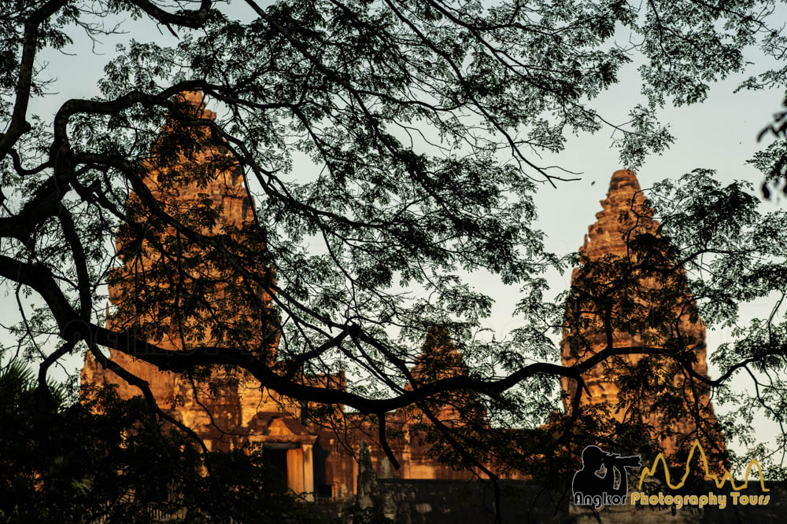
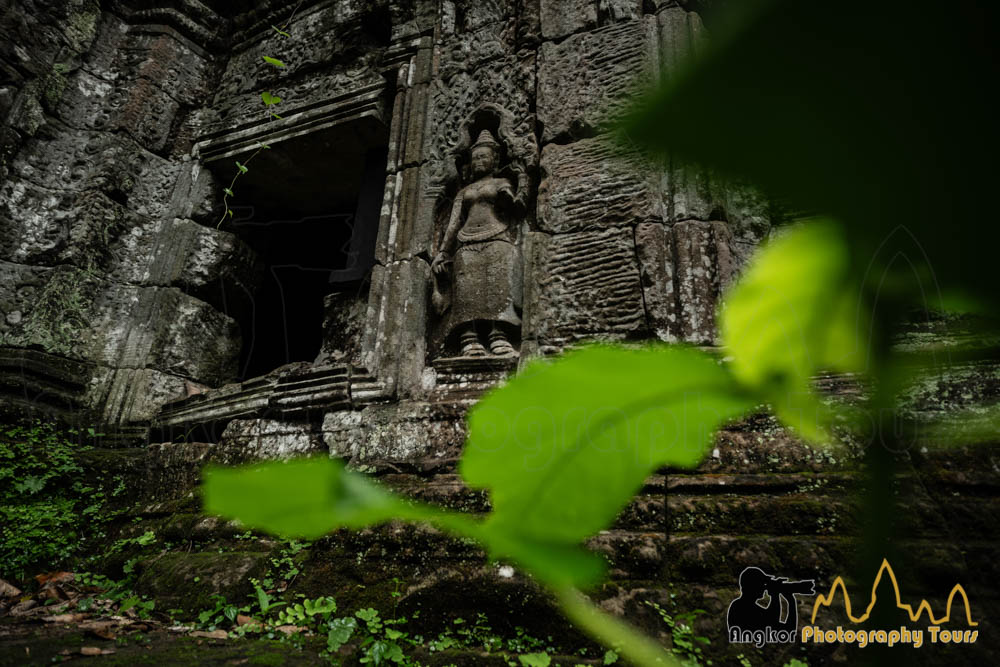
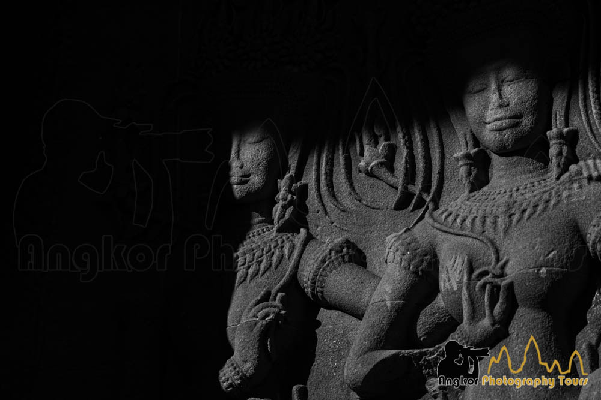

Le Cambodge en Images




Le Cambodge offre des opportunités photographiques exceptionnelles qui vont bien au-delà du célèbre complexe des temples d'Angkor, présentant des expériences variées pour les photographes de temples passionnés et les amateurs de photographie de rue à la recherche de rencontres culturelles authentiques.
Les temples légendaires d'Angkor continuent d'attirer des photographes du monde entier, et pour d'excellentes raisons. Siem Reap sert de portail vers cette extraordinaire collection d'architecture sacrée couvrant sept siècles (du 7ème au 14ème), offrant un matériel photographique abondant pour réaliser les rêves de tout photographe de temples. Les nouveaux venus sont constamment émerveillés par l'immensité du site et les possibilités créatives illimitées qu'il offre.
Maîtriser la photographie de temple nécessite de la persévérance, de l'endurance et une réflexion stratégique sur la dynamique de la lumière. Les mois de mousson d'août à novembre offrent des récompenses exceptionnelles, car de nombreuses structures se parent d'une mousse luxuriante qui ajoute une texture visuelle remarquable à vos clichés. Pendant les périodes pluvieuses, les photographes peuvent obtenir des reflets de temples spectaculaires dans les bassins d'eau, produisant une imagerie en miroir fascinante qui transforme des vues reconnaissables en compositions enchanteresses.
Bien que la photographie de temples attire les foules, les véritables joyaux photographiques du Cambodge existent au sein de ses rythmes quotidiens et de ses habitants. Avec plus de 70 % des citoyens résidant toujours dans des communautés rurales en 2025, la nation offre des chances infinies pour une narration authentique à travers la photographie.
Les communautés villageoises offrent des aperçus intimes de l'existence cambodgienne traditionnelle, où les habitations en bois reposent paisiblement au milieu de rizières luxuriantes. Les marchés communautaires regorgent de potentiel visuel — des arrangements colorés de produits tropicaux et de produits de la ferme aux interactions animées entre vendeurs et acheteurs. Les Cambodgiens accueillent généralement les photographes avec une hospitalité authentique, consentant souvent aux portraits lorsqu'ils sont approchés avec courtoisie.
Les moines bouddhistes offrent des sujets particulièrement captivants pour ceux qui documentent le patrimoine religieux du Cambodge. Au lieu d'organiser des photos dans les temples historiques, les photographes découvrent des moments organiques dans les pagodes et monastères contemporains, où de jeunes moines vêtus de robes safran vibrantes mènent leurs activités quotidiennes. Ces instants spontanés — qu'il s'agisse d'apprendre des langues, d'entretenir les installations du temple ou de participer aux dévotions du soir — capturent le cœur de la culture bouddhiste du Cambodge à travers des moments brefs et authentiques.
Les destinations les plus épanouissantes pour la photographie humaine et la photographie de rue englobent les marchés communautaires actifs, les établissements entourant le lac Tonlé Sap et les villes rurales à travers les provinces. Pendant la saison verdoyante d'août, les photographes peuvent observer la plantation manuelle traditionnelle du riz, une coutume qui persiste dans certaines régions et offre des vues distinctives sur les traditions agricoles du Cambodge.
La richesse visuelle du Cambodge n'existe pas seulement dans ses monuments historiques, mais dans la culture vibrante qui s'épanouit à leurs côtés.
Seulement 4 places disponibles pour cette expédition photographique exclusive. Sécurisez votre place et transformez votre photographie de voyage pour toujours.
Acompte de 30% pour sécuriser votre place • Remboursement intégral si annulé 3 mois avant le départ
Plus que du simple tourisme — c'est un atelier de photographie complet conçu pour élever vos compétences tout en explorant les joyaux cachés du Cambodge.
Capturez le magnifique Angkor Wat au lever du soleil et explorez des temples cachés
Photographiez des marchés vibrants, des villages traditionnels et la vie Khmère authentique
Un timing parfait pour un éclairage magique sur les lieux les plus photogéniques du Cambodge
Guide photographe professionnel avec plus de 12 ans d'expérience au Cambodge
Sok San Road, Sangkat Svay Dangkum
District de Siem Reap, Province de Siem Reap 17252
Cambodge